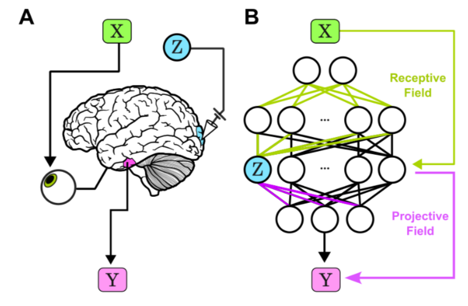

// ABOUT
$ whoami
Neuroscientist. I build mechanistic models of neural circuits, biological
and artificial, and use each to explain the other.
Postdoc in the Pasca Lab at Stanford: computation × neural organoids. PhD in Neuroscience at Stanford with Stephen Baccus: deep models of the retina and causal frameworks from neuroscience for AI interpretability.
Former classical violinist. Current cactus collector and father.
Email: melander [at] stanford [dot] edu
// RESEARCH
Mechanistic modeling of biological neural circuits. Biological insights applied to artificial neural networks. What happens at the interface of biology and AI?
Underlying interests: superposition · sparse autoencoders · circuits & attribution · encoding of natural stimuli · recurrent dynamics · development of neural computation · emergent complexity · computational efficiency · brain-machine interfaces · open-source tools for mechanistic interpretability.
Causal interpretation of neural network computations with contribution decomposition (CODEC). ICLR 2026 [pdf] [code]

CODEC uses sparse autoencoders to decompose a network's behavior into sparse motifs of hidden-neuron contributions to its outputs, rather than activations alone. In image classifiers, contributions grow sparser and higher-dimensional with depth, and positive and negative effects on outputs increasingly separate. The decomposition supports causal control of outputs. Applied to models of the vertebrate retina, it shows how interneurons combine and where dynamic receptive fields come from.
Code: bscope, neural-network functional microscopy. An open-source PyTorch library for recording activations, gradients, and contributions in any model (CNNs, MLPs, ViTs), with attribution methods, causal ablations including attention-head disruption, and sparse autoencoders.
// SELECTED PUBLICATIONS
- Melander, J.B., Alaoui, Z., Liu, S., Ganguli, S., Baccus, S. Causal interpretation of neural network computations with contribution decomposition. ICLR (2026) [pdf]
- Ding, X., Lee, D., Melander, J.B., Sivulka, G., Ganguli, S., Baccus, S. Information geometry of the retinal representation manifold. NeurIPS (2023) [pdf]
- Maheswaranathan, N., McIntosh, L., …, Melander, J.B., …, Ganguli, S., Baccus, S. Interpreting the retinal neural code for natural scenes: from computations to neurons. Neuron (2023) [pdf]
- Melander, J.B.*, Nayebi, A.*, …, Mao, T., Zhong, H. Distinct in vivo dynamics of excitatory synapses onto cortical pyramidal neurons and parvalbumin-positive interneurons. Cell Reports (2021) [pdf]
Full list: Google Scholar.